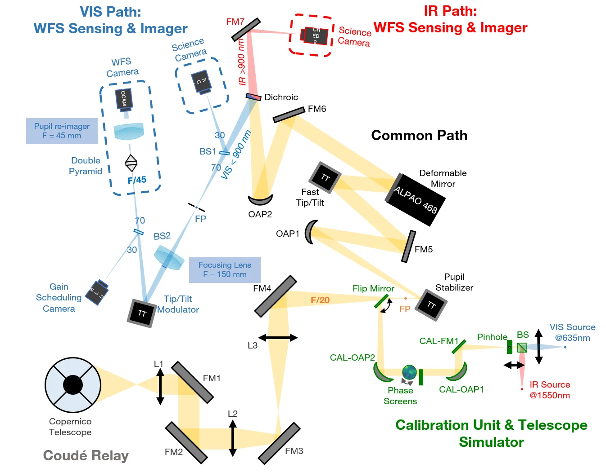
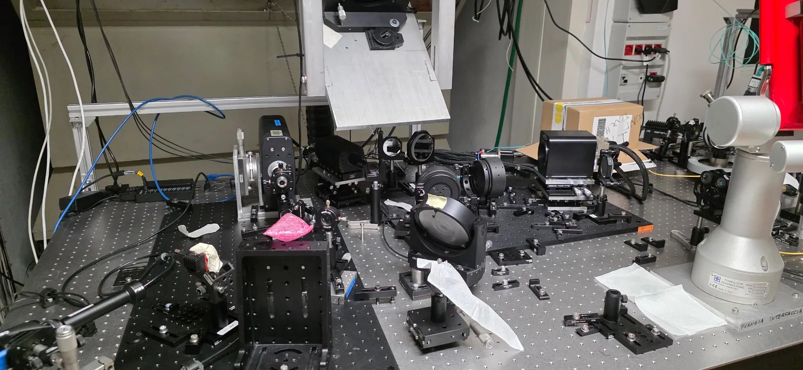
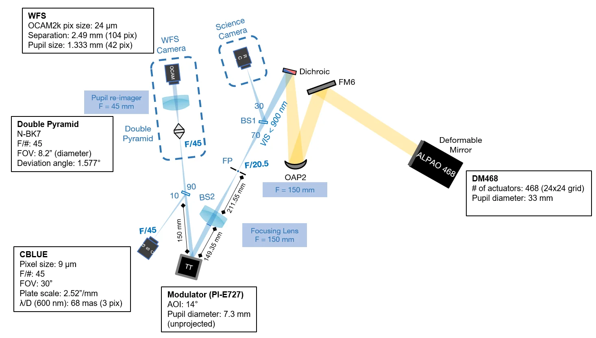

Bench architecture


Specifications
| Input beam | F/20.5 from the Coudé focus |
|---|---|
| VIS / NIR split | Long-pass dichroic: <900 nm reflected to VIS, NIR transmitted (via FM7) |
| VIS science port | Telecentric F/20.5, 1′ unvignetted FoV, 5.53″/mm, optimized for 600–900 nm |
| WFS and GSC focal plane | F/45 |
| Common path | Selector to dichroic on one 600 × 450 mm breadboard |
| Deformable mirror | ALPAO DM468: 468 actuators (24×24), 33 mm clear aperture |
|---|---|
| Pupil on DM | 31.6 mm unprojected; 31.6 × 32.3 mm at 12° AOI (±0.4 mm margin) |
| Wavefront sensor | Double pyramid (N-BK7, 3.05°), OCAM2K camera (24 µm pixels) |
| Pupil sampling | 42 px pupils, 2.49 mm (104 px) separation |
| Modulator | PI-E727 tip-tilt, 7.3 mm pupil, 14° AOI |
| Fast tip-tilt | 130 mm upstream of the DM; 0.008° per arcsec on sky |
| Pupil stabiliser | Step <0.01° (goal <0.001°) |
| Operational range | Guide star mag 0–11.2 |
| Wavelength | VIS 500–900 nm · NIR 1000–1700 nm |
|---|---|
| Science FoV | VIS 1 arcmin · NIR 1 arcmin |
| PWFS FoV | 8 arcsec |
| Throughput | Science 4–8% · PWFS 6–12% |
| Cameras | VIS ORCA · NIR CRED2 |
Sources: Design Description Document (EKARUS VIS); OAO 2026 tutorials.
Common Path
The selector mirror, just after the Coudé focal plane, also works as pupil stabiliser. OAP1 images the pupil on the DM, with a fast tip-tilt mirror upstream to offload tip-tilt from the DM. OAP2, identical to OAP1, forms an intermediate focal plane. FM5 and FM6 fold the beam so everything from OAP1 to the dichroic fits on one breadboard.
| Pupil stabiliser | 30 mm after the F/20.5 focus. 1° tilt: PSF shift 1.05 mm (5.8″ on sky), pupil shift 73% of diameter. Max needed ≈ 0.33° for 25% pupil drift (FoV drift ≈ 1.9″). |
|---|---|
| Fast tip-tilt | 130 mm upstream of the DM. 1″ on sky = 0.008° rotation = 0.11% pupil shift on the DM. |
| DM468 | Pupil 31.6 mm, 12° AOI → 31.6 × 32.3 mm on a 33 mm clear aperture. Measured flat ≈ 6 nm RMS, TT stroke ≈ 15 µm surface. |
| Dichroic | Long-pass, AOI 15°. Custom part with 0.1° wedge on the second face to reduce astigmatism and NCPA; quotations pending. |
| Status | Aligned in Padova (June 2026), transmitted WFE ≈ 55 nm RMS over 33 mm. |
Documents
- Design Description Document (EKARUS VIS): common path, pupil stabiliser, tip-tilt, DM, dichroic (link to add)
- Common path AIT logbook (Padova)
- Interferometry of the common-path alignment (link to add)
WFS Channel

BS1 sends about 30% of the visible light to the VIS port. A re-imaging lens puts the pupil on the modulator and makes an F/45 focus. BS2 sends about 10% to the Gain Scheduling Camera (GSC) and 90% to the pyramid. A fold mirror before the pyramid focus can feed visiting WFSs.
| BS1 | Thorlabs BSS10 (30:70) or BSN10 (10:90), UV fused silica, 30′ wedge, used at 20° AOI |
|---|---|
| BS2 | Same options as BS1, 10:90 to the GSC |
| Modulator (PI-E727) | Pupil 7.3 mm (unprojected), AOI 14° (28° deflection). 1 λ/D at 800 nm = 0.003° on one axis, 0.003°/cos 14° on the other. |
| Double pyramid | Arcetri, two glued N-BK7 pyramids, face angle 3.05°, F/45. Cone angle 0.64°, deviation 1.577°. Average RMS WFE at tip 56 nm; 90% EE within ≈ 93 µm. |
| Pupil re-imager | AC254-045-B: 42 px pupils, 2.49 mm (104 px) separation. (AC254-060-B would give 55.5 px and 3.32 mm / 138 px.) |
| WFS camera | OCAM2K, 24 µm pixels |
| GSC camera | C-Blue, F/45, 30″ FoV, 2.52″/mm, exit pupil 330 mm before focus. 18.4 × 13.9″ field, 23 mas/px, λ/D at 600 nm = 68 mas (3 px). |
| BS1 out | Defocus 123 nm RMS (focus shift 6.9 mm at F/45), astigmatism 19 nm RMS. 4.4 mrad deviation: PSF shift ≈ 700 mas, pupil shift ≈ 10%. |
|---|---|
| BS2 out | Defocus 21 nm RMS (focus shift 1.2 mm at pyramid), astigmatism 10 nm RMS. PSF shift ≈ 380 mas, pupil shift ≈ 18%. |
Source: Design Description Document (EKARUS VIS). Values from the nominal design, without manufacturing tolerances.
Documents
- Design Description Document (EKARUS VIS): BS1, BS2, modulator, pyramid, pupil re-imager (link to add)
- Pyramid WFS characterization (link to add)
VIS Imager
The VIS science port receives about 30% of the visible light reflected by BS1. It initially hosts a visible camera.
| Beam | Telecentric F/20.5 |
|---|---|
| Field of view | 1′ diameter, unvignetted |
| Plate scale | 5.53″/mm |
| Wavelength | Optimized for 600–900 nm; shorter wavelengths possible with reduced performance (uncorrected differential chromatic focus) |
| With a C-Blue camera | 9 µm pixels, 812 × 612 px → 40.4 × 30.5″ field |
Source: Design Description Document (EKARUS VIS). Spot diagrams and RMS WFE vs FoV are in the document.
IR Channel
Light above 900 nm passes through the dichroic and is folded by FM7 toward the NIR channel.
| Wavelength | 1000–1700 nm |
|---|---|
| Field of view | 1 arcmin |
| Camera | CRED2 |
Optical design and documents to add.
Dual Calibration Unit
The calibration unit and telescope simulator feed the bench with artificial sources and turbulence, through a flip mirror into the common path.
| Sources | VIS 635 nm, IR 1550 nm, through a pinhole |
|---|---|
| Turbulence | Phase screens |
| Status | Hardware received in Teramo; alignment planned for July 2026, then transport to Asiago and commissioning |
Sources: bench schematic; Newsletter April–May 2026.